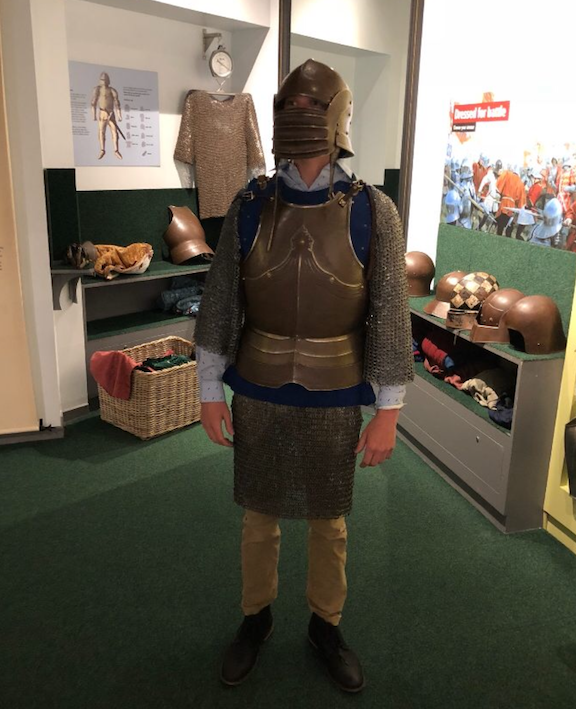
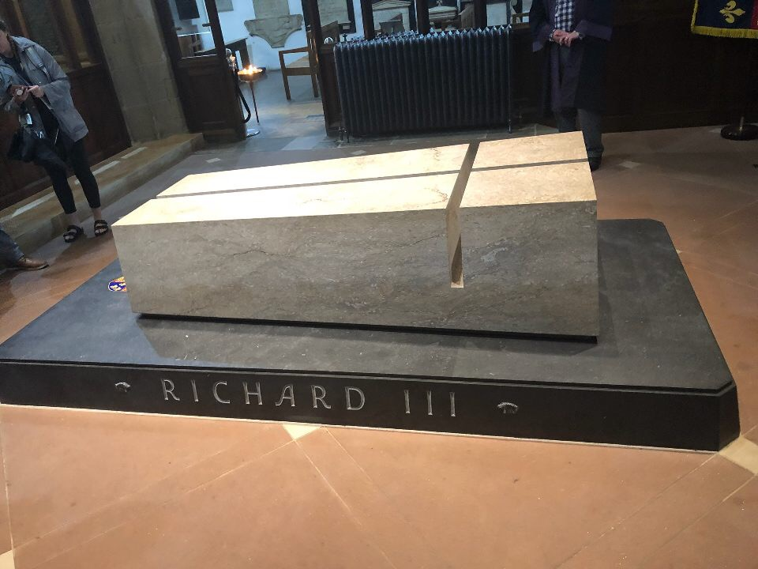

Marking the first full day in our new world, excitement was high and waking up to windows looking at the city of London let reality begin to sink in. Today started at 6:30 in the morning; Despite a certain three individuals that shall remain nameless (but also 33% listed as the author of this post), Dr. Engle was entirely confident in his class' ability to perform vertically at this hour. We began our day with a roundtable in 2A to establish our agenda and ensure that all three of our early morning antagonists had succeeded in their journey to consciousness. It was here that "Patrick Baldwin - Undefined" became "Patrick Baldwin - Caboose Spectacular". From this point forward, I was in charge of being the last line of defense against stragglers in our group as we made our way through busy sidewalks and crowded tube stations. This is also about the moment in time that I learned that Stephanie would become the biggest enemy of 'The Boose'.
We made our way to the tube station at Baron's court, which we used to get to King's Cross. This hosted not only our next medium of public transportation in the form of a train, but it also hosted the infamous beverage trolley - the "Disney World" of the English commute. We had been well prepped on the virtues of the beverage trolley and did not take them lightly. Our reserved seats and individually packaged servings of wine ensured that our first experience with the trains of London was positive. We were then met by Wes, the arguably arbitrary name given to our bus driver. With tube, train, and bus now crossed off of the list of public transportation media, we were now "getting around" like Kind Edward VI, who many refer to as "Edward the Caresser".
Wes took the ten of us and "I'm Upset" by Drake deep into the English countryside until we got to Bosworth, where King Henry VII began the reign of the Tudors. Here, we found the first history museum that any of us had ever been to that hung signs reading "Touch What You Can Reach" rather than "Do Not Touch". It is up to interpretation as to whether or not this was actually an open invitation to turn Nic into a mid-15th-century knight. But what can I say? the man really knows how to pull off a codpiece.
Nic as a mid 15th-century knight

In the glorious name of touching, the gentlemen of the group learned that we all had the brute strength to fling an arrow 240 yards, as far as John the Archer! This meant that our bodies would have been significant currency in the days of the Battle of Bosworth. I know that at least I have slept far better ever since coming to that realization.
At the museum, we were able to seee what Richard III's skeleton looked like. It was so effected by his scoliosis, that historians immediately had a hunch (pun partially intended) that the skeleton cuold belong to Richard III. A few casual fondlings of King Henry VIII's codpiece later, we had made our way out of the museum and began our tour of what was once thought to be the grounds of the Battle of Bosworth. The battle took place in the mid 1400s and the memorial was erected only years ago. However, historians decided to pick the .1% of the possible time since the battle to prove that the location of the battle was incorrect. So in the end, the memorial is nowhere near the actual scene of the battle. The English taxpayers are extremely pleased.
A Few Casual Fondlings of Henry VIII's Codpiece

We were then met by John of Bosworth, who had a reasonable portion of his ear cut off and gave us a fantastic tour of the site of the battle. We then were off to Leicester Cathedral where we were met by 2 Palls. One was our relatively boring tour guide, which Nic swears was not true, but everybody else disagreed with him. The second was the Pall that was a blanket to cover Richard III's skeleton after it was found under a car port around 2012 and before the memorial in the cathedral was ready for him. Paul spent around 45 minutes talking about this (blanket) Pall and it could have just as easily been a 4 minute description of how the back side represents the past and mirrors the front side which represents the future. We then took the train to get back home, which was not equipped with a refreshment trolley. Our coping mechanisms were heavily tested.
Richard III's Tomb in Leicester Cathedral
